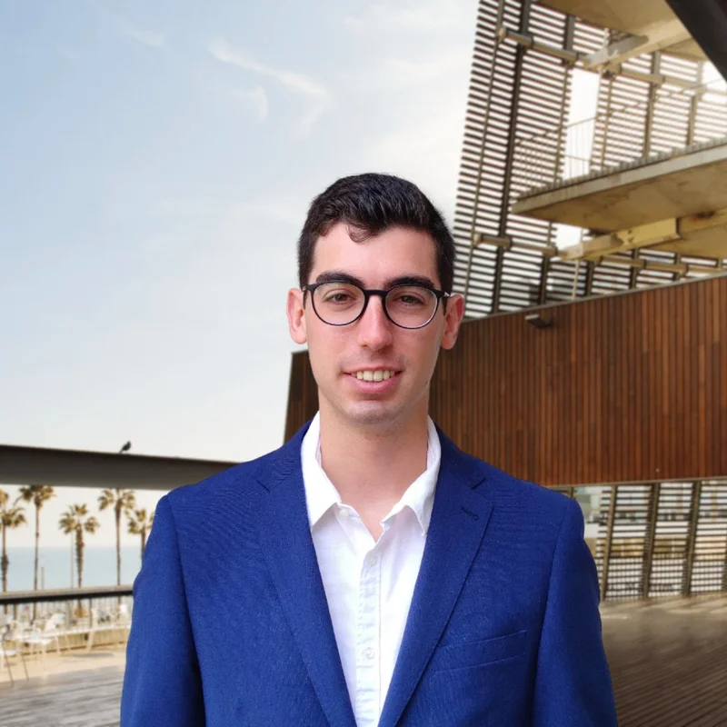

Overview

I research how organisms survive and adapt to extreme radiation environments, from the sub-background silence of deep underground labs like SNOLAB to the high-flux conditions of low Earth orbit, and translate those findings into hardware for long-duration human spaceflight.
Currently
- Coordinating the GUY project and piloting automated continuous culture systems at SNOLAB.
- Presenting at the Radiation Research Society Annual Meeting, October 2026.
Affiliations
Selected projects across radiation biology and space bioengineering
Global Underground Yeast (GUY)
SNOLAB · 2025 to Present
Multi-site validation of biological responses to sub-background radiation across deep underground labs.
Radiation-Deprived Yeast Metabolism
SNOLAB · 2025 to Present
Characterizing radiation-deprived metabolism using automated bioreactors and multi-omics.
Cross-Environmental Radiation Analysis
SNOLAB · 2025 to Present
Comparing low-background terrestrial data with active space radiation datasets.
Contact
Open to research collaborations, space biotech ventures, and inquiries from fellow researchers and congress organizers.